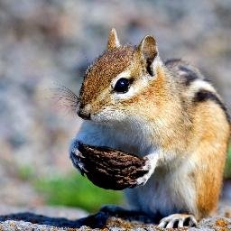
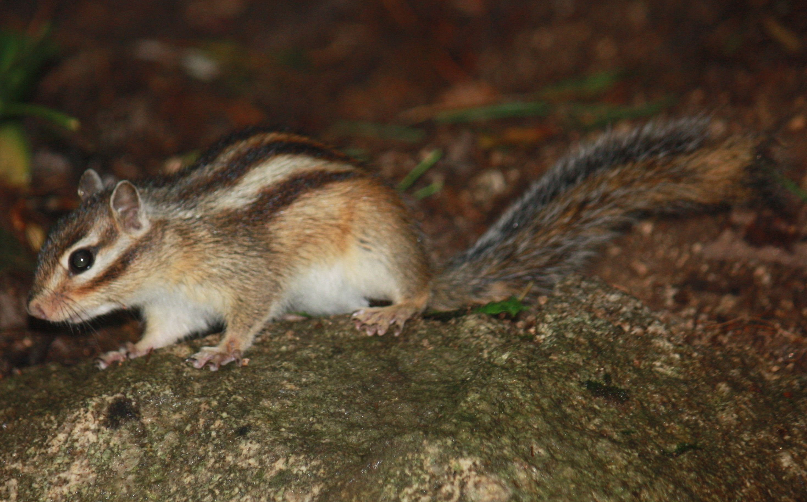
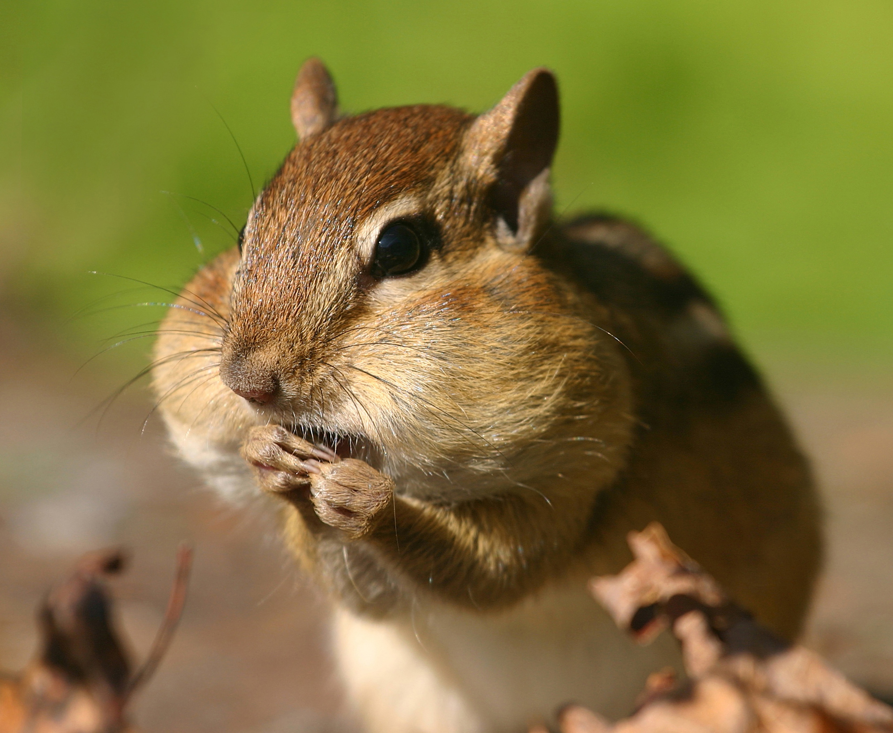

Бурундуки
Бурундуки — род грызунов из семейства беличьих. К бурундукам относятся 25 видов, большинство из которых обитает в Северной Америке, за исключением одного евразийского вида — азиатского, или сибирского бурундука (Tamias sibiricus).
Согласно толковому словарю Ушакова, русское название животного является заимствованием из татарского языка. Также в первой половине XX века существовала версия, что слово является заимствованием от марийского слова uromdok
Внешний вид
В зависимости от вида, вес бурундуков может составлять от 30 до 120 г, а размер — от 5 до 15 см при длине хвоста от 7 до 12 см. Отличительным признаком всех видов являются пять тёмных полосок вдоль спины, разделённые белыми или серыми полосками. Остальная окраска бурундуков — красно-бурая или серо-бурая. Так как это является общей чертой всех бурундуков, отдельные виды на первый взгляд трудноразличимы.
Распространение

Бурундуки распространены почти по всей Северной Америке от полярного круга до центральной Мексики. Восточно-американский бурундук (Tamias striatus) образует отдельный подрод, который встречается на востоке континента. 23 вида из подрода Neotamias обитают в западной части Северной Америки. Сибирский бурундук обитает в лесной и таёжной зоне Евразии от Северной Европы до Корейского полуострова и севера Китая, а также на острове Хоккайдо и Сахалине, но вот на Камчатке бурундуков нет. В Центральной Европе прижились одичавшие бурундуки, убежавшие из ферм по их разведению.
Основной сферой обитания бурундуков является лесная местность. Восточно-американский бурундук населяет лиственные леса Новой Англии, сибирский бурундук — тайгу, а малый бурундук (Tamias minimus) — субарктические хвойные леса Канады. Некоторые виды приспособились к открытым местностям, поросшим кустарниками.